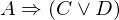
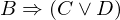

Show the Proof¶
In [1]:
import proveit
# Automation is not needed when only showing a stored proof:
proveit.defaults.automation = False # This will speed things up.
proveit.defaults.inline_pngs = False # Makes files smaller.
%show_proof
Out[1]:
| step type | requirements | statement | ||
|---|---|---|---|---|
| 0 | instantiation | 1, 2, 3, 4, 5, 6 |  , ,  , ,  , ,  , ,  , ,  , ,  ⊢ ⊢ | |
 : , : ,  : , : ,  : : | ||||
| 1 | theorem | ⊢  | ||
| proveit.logic.booleans.disjunction.singular_constructive_dilemma | ||||
| 2 | assumption | ⊢ | ||
| 3 | assumption | ⊢ | ||
| 4 | assumption | ⊢ | ||
| 5 | deduction | 7 | , , ⊢  | |
| 6 | deduction | 8 | , , ⊢  | |
| 7 | instantiation | 9, 12, 13, 10 | , , , ⊢ | |
: , :  | ||||
| 8 | instantiation | 11, 12, 13, 14 | , , , ⊢ | |
| : , : | ||||
| 9 | theorem | ⊢  | ||
| proveit.logic.booleans.disjunction.or_if_left | ||||
| 10 | modus ponens | 15, 16 | , ⊢ | |
| 11 | theorem | ⊢  | ||
| proveit.logic.booleans.disjunction.or_if_right | ||||
| 12 | assumption | ⊢ | ||
| 13 | assumption | ⊢ | ||
| 14 | modus ponens | 17, 18 | , ⊢ | |
| 15 | assumption | ⊢ | ||
| 16 | assumption | ⊢ | ||
| 17 | assumption | ⊢ | ||
| 18 | assumption | ⊢ | ||